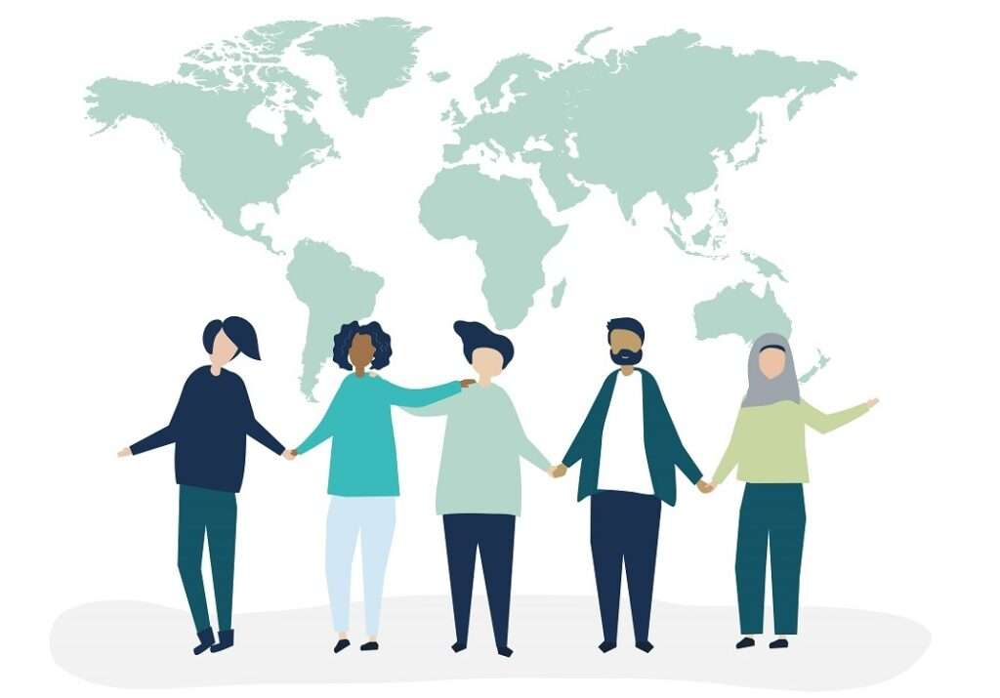

Bine ai venit pe Kiseki!
Descoperă cele mai frumoase cadouri personalizate pentru orice ocazie.
Într-o lume plină de momente obișnuite, există gesturi care au puterea de a transforma o zi obișnuită într-una de neuitat. În japoneză, "kiseki" (奇跡) înseamnă miracol – acele clipe rare și prețioase care ne umplu sufletul de lumină și emoție. Iar ce poate fi mai miraculos decât un cadou oferit din inimă?
Un cadou nu este doar un obiect, ci o emoție împachetată cu grijă. Este felul în care spunem „Te prețuiesc”, „M-am gândit la tine”, „Vreau să-ți aduc bucurie.” Este acel mic miracol care face ochii să strălucească, buzele să zâmbească și sufletul să simtă căldura celor dragi.
Fie că este un gest simbolic sau un dar special ales, fiecare cadou poartă în el o parte din sufletul celui care îl oferă. La fel ca un kiseki, el vine neașteptat, dar rămâne pentru totdeauna în amintire.
Aici, la Kiseki, credem în puterea micilor miracole. Fiecare cadou pe care îl alegi poate deveni parte dintr-o poveste de neuitat. Alege să dăruiești un kiseki – pentru că cele mai frumoase surprize nu sunt întâmplătoare, ci pline de iubire. ✨
Produsele Noastre
Cadourile personalizate sunt o modalitate unică de a arăta cât de mult îți pasă.
- ☕ Căni unice
- 👕 Haine personalizate
- 🕯️ Lumânări decorative
- ✨ Și multe alte surprize!
Grijă și pasiune în fiecare detaliu
Fiecare produs pe care îl realizăm este mai mult decât un simplu obiect – este o poveste, un sentiment, o amintire prețioasă care prinde viață. Punem suflet în fiecare detaliu, pentru că știm că un cadou nu este doar un dar, ci o expresie a iubirii, a grijii și a momentelor de neuitat.
Ne dedicăm fiecărei creații cu pasiune și atenție, alegând cu grijă materialele, lucrând cu precizie și adăugând acea notă specială care face diferența. Fie că este vorba despre un mesaj gravat cu emoție, o culoare aleasă perfect sau un design personalizat, totul este gândit pentru a aduce bucurie și pentru a transforma un gest simplu într-o emoție profundă.

Credem că adevărata valoare a unui cadou stă în intenția din spatele lui. De aceea, fiecare produs pe care îl oferim este făcut cu dragoste, pentru ca tu să poți dărui nu doar un obiect, ci o parte din sufletul tău. 💖
„Un cadou personalizat este o amintire prețioasă.”
Cadouri oferite in familie

Cadouri oferite la locul de munca

Cadouri oferite prietenilor

Link cu idei de cadouri pe care sa le oferi prietenilor
Program de lucru
| Zi | Deschidere | Pauză | Închidere |
|---|---|---|---|
| Luni - Vineri | 10:00 | 13:00 -14:00 | 19:00 |
| Sâmbătă | 11:00 | 13:00 -14:00 | 16:00 |
| Duminică | - | Închis | - |
Martie 2025
| Lun | Mar | Mie | Joi | Vin | Sâm | Dum |
|---|---|---|---|---|---|---|
| 1 | 2 | 3 | ||||
| 4 | 5 | 6 | 7 | 8 | 9 | 10 |
| 11 | 12 | 13 | 14 | 15 | 16 | 17 |
| 18 | 19 | 20 | 21 | 22 | 23 | 24 |
| 25 | 26 | 27 | 28 | 29 | 30 | 31 |
Întrebări frecvente
🎁 Cum pot plasa o comandă?
Pentru a plasa o comandă, trebuie să adaugi produsul în coșul de cumpărături, să completezi detaliile și să finalizezi plata.
Gândește-te la noi ca la spiridușii lui Moș Crăciun, dar activi tot anul! Tu alegi cadoul, noi ne ocupăm de restul. Ușor, rapid și fără stres. 😊
Dacă ai nevoie de ajutor, ne poți contacta și îți oferim recomandări personalizate. Practic, suntem acel prieten care are mereu idei bune de cadouri! 🎀
💳 Care sunt opțiunile de plată?
Acceptăm plata cu cardul, plata ramburs sau transfer bancar. Detalii complete sunt disponibile pe pagina de checkout.
Fie că alegi să plătești online sau la livrare, cert e că cineva va fi foarte fericit când va primi cadoul tău. Și cine știe? Poate îți va răspunde cu un cadou la fel de frumos! 😉
Ah, și nu-ți face griji! Site-ul nostru este 100% sigur, așa că banii tăi sunt în siguranță – la fel ca și surpriza pe care o pregătești! 🎁
🚚 Care este termenul de livrare?
Termenul de livrare este între 2 și 5 zile lucrătoare, în funcție de produsul comandat și de locația ta.
Știm că așteptarea poate fi grea, dar crede-ne, merită! În plus, ai ocazia perfectă să îți creezi un mic moment de anticipare. 😍
Dacă ai nevoie de un cadou super rapid, îți recomandăm să verifici opțiunile de livrare expres. Suntem aici să te salvăm și pe ultima sută de metri! ⏳
📦 Ce fac dacă vreau să returnez un produs?
Ne dorim ca fiecare cadou să fie perfect, dar în cazul în care există vreo problemă, poți returna produsul conform politicii noastre de retur.
Tot ce trebuie să faci este să ne contactezi și vom găsi împreună cea mai bună soluție. Promitem că nu te lăsăm singur(ă) în această misiune! 💌
Și da, știm că despărțirile sunt grele, dar uneori un alt cadou este alegerea mai potrivită! 😄
🎨 Pot personaliza cadoul ales?
Desigur! Avem o gamă variată de produse personalizabile. Poți adăuga nume, mesaje speciale, inițiale sau chiar imagini. Fiecare cadou devine astfel unic și de neuitat!
În plus, dacă ai o idee mai specială, scrie-ne! Suntem mereu deschiși la propuneri creative. Până la urmă, ce poate fi mai frumos decât un cadou făcut special pentru cineva drag? 🥰
🎁 Oferiți împachetare cadou?
Sigur că da! Cadourile nu sunt doar despre conținut, ci și despre emoția descoperirii. Oferim servicii de împachetare elegante, astfel încât surpriza să fie completă. 🎀
Poți alege din mai multe tipuri de ambalaje și panglici, iar dacă vrei să adaugi și un mesaj scris de mână, lasă-ne detaliile în comentarii la comandă. ❤️
🎊 Pot trimite cadoul direct la destinatar?
Da, și este chiar o idee excelentă! Dacă vrei să faci o surpriză cu adevărat specială, putem livra cadoul direct destinatarului.
Pentru un plus de emoție, poți adăuga și un mesaj personalizat. Asta înseamnă că persoana dragă se va bucura de cadou fără să bănuiască nimic înainte! ✨
Fun facts
🌏 Tradiții de oferit cadouri în Asia
🎎 Japonia
În Japonia, oferirea de cadouri este o adevărată artă! Există două sezoane principale pentru cadouri: O-chugen (vara) și O-seibo (iarna), când oamenii oferă daruri pentru a-și arăta recunoștința.
Dacă primești un cadou, este politicos să refuzi de câteva ori înainte de a-l accepta. De asemenea, numărul de obiecte oferite trebuie evitat în multipli de patru, deoarece „patru” sună similar cu „moarte” în japoneză. 🎁
🎀 Coreea de Sud
Ambalajul este la fel de important ca și cadoul! Se folosesc țesături speciale numite bojagi, iar culorile au semnificații specifice: roșul și rozul aduc noroc, în timp ce albul este evitat.
Nu dărui pantofi persoanei iubite, deoarece legenda spune că astfel va fugi de tine! 🏃♂️💨
🧧 China
Unele cadouri sunt considerate ghinioniste. Nu oferi niciodată un ceas (*zhōng*), deoarece sună similar cu „sfârșitul” în chineză. În schimb, fructele scumpe, cum ar fi portocalele și merele, sunt considerate norocoase. 🍊🍏
🎨 India
Cadourile sunt oferite cu ambele mâini, ca semn de respect. Evită obiectele din piele dacă destinatarul este vegetarian și nu oferi cadouri albe sau negre, deoarece sunt asociate cu doliul.
Dacă primești un cadou, nu-l deschide imediat în fața celui care ți l-a dat – e considerat nepoliticos! 🎁
🌍 Tradiții de oferit cadouri în Europa
🇳🇱 Olanda
Copiii își găsesc cadourile lăsate de Moș Nicolae în pantofi! Această tradiție este foarte veche și are loc în fiecare an pe 5 decembrie. 🎁
🇪🇸 Spania
Cadourile de Crăciun sunt oferite pe 6 ianuarie de Los Reyes Magos (Cei Trei Magi), nu de Moș Crăciun. Copiii își lasă pantofii la ușă, iar dacă au fost cuminți, primesc dulciuri. Dacă nu... primesc cărbuni! 🎄
🇫🇷 Franța
Ambalajul trebuie să fie impecabil! Un cadou neîmpachetat sau împachetat neglijent este considerat lipsă de respect. De asemenea, nu dărui crizanteme – sunt asociate cu înmormântările! 🏵️
🇩🇪 Germania
Dacă îți serbezi ziua de naștere, trebuie să fii tu cel care oferă un cadou sau măcar o masă invitaților. Prietenii îți vor ura „Alles Gute zum Geburtstag!” și îți vor aduce flori sau vin. 🍷🌸
🌎 Tradiții de oferit cadouri în America
🇺🇸 Statele Unite
Cadourile sunt o parte esențială a tuturor sărbătorilor. În unele familii, există regula „deschidem cadourile pe rând, unul câte unul” pentru a prelungi bucuria. 🎊
🇲🇽 Mexic
La o quinceañera (aniversarea de 15 ani a unei fete), se oferă cadouri simbolice, cum ar fi o păpușă sau o coroană, pentru a marca trecerea la maturitate. 👑
🇧🇷 Brazilia
Prieteni își oferă cadouri simbolice tot timpul anului. Tradiția „Amigo Secreto” (Secret Santa) este extrem de populară, dar există și o variantă amuzantă numită „Amigo da Onça”, unde se dau cadouri în glumă! 😂
🇦🇷 Argentina
Când primești un cadou, este politicos să-l deschizi imediat și să mulțumești pe loc. Spre deosebire de alte culturi, acceptarea imediată este un semn de apreciere sinceră! 🥰

~!Serviciile de ambalare specială se plătesc separat!~
Pentru calcularea prețului total:
De exemplu, dacă:
- Prețul de bază este 150 RON (P₀ = 150)
- Costul ambalajului este 5 RON (Cₐ = 5)
- Numărul de obiecte comandate este 3 (n = 3)
Atunci, prețul total va fi:
P = P₀ + Cₐ* n
P = 150 + 5 * 3 = 150 + 15 = 165 RON